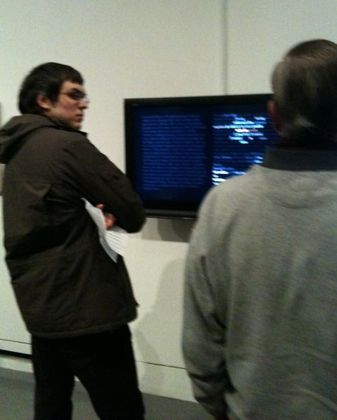
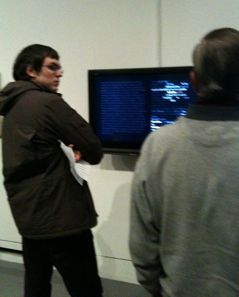

Poetry Beyond Text
Networked installation, custom software
Installed for Poetry Beyond Text at Dundee Contemporary Arts (DCA)
Dundee Scotland,March 4-April 1, 2011
(opening March 4, 2011, 6pm)
In this installation a total of five procedural entities, five readers, move through six pages of poetic writing. The six pages are composed of two three-page texts—respectively 'Misspelt Landings' and 'Poetic Caption'—one a prose poem, the other a poetic caption concerning the operations of the Readers Project itself. Both texts are by John Cayley.
Only one of the readers is consistently visible on the recto or right-hand page of the gallery display. This is a Perigram Reader which scans and highlights its leading neighbors, not just the word ahead but those on the lines above and below. If it finds that one of these other words forms a 'perigram' or phrase of natural English, it may diverge from the simple reading path and shift its attention up or down.
One or more of the other readers are often visible. These readers differ in two respects: in terms of their basic trajectories and in terms of the knowledge they have concerning the phrases in the underlying texts.
There is a pair of Simple Readers. These slowly highlight, in an ochre colour, the successive words of a text in their standard order. But these particular readers are also fertile. They may spawn Perigram Readers in their neighboring words like cellular automata. A fertile reader will only spawn if a neighboring word forms a phrase (a perigram) with what it has just read. A spawned reader (in grey) heads off in the direction of its spawning and dies as soon as it no longer finds a word that makes a phrase of natural English, usually not more than three generations. One might say that such a reader is highlighting neighboring 'phrase-tendrils' in the course of its reading.
 
 
Each of the two fertile simple readers only knows the phrases from one of the three-page texts. When it moves through the text that it doesn't know, it becomes almost infertile, finding very few or no familiar phrases in the text that it is reading.
Another pair of fertile Perigram Readers highlight the words they are reading in brown, and also set off phrase-trails in their neighborhoods. Again, each of them only knows one of the underlying texts. When a fertile Perigram Reader reaches a text it doesn't 'know' it behaves like a Simple Reader. Not only is it unable to find phrases in neighboring words that it recognizes, it doesn't find the words in its leading neighbors that would encourage it to divert from a 'simple' reading path.
When the readers overtake and interfere with one another, it can become very difficult to discern how any of them are proceeding.